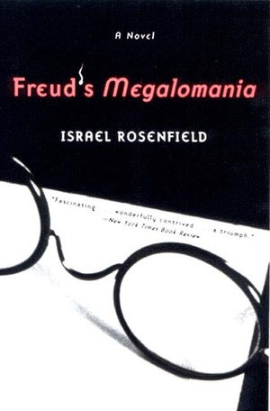
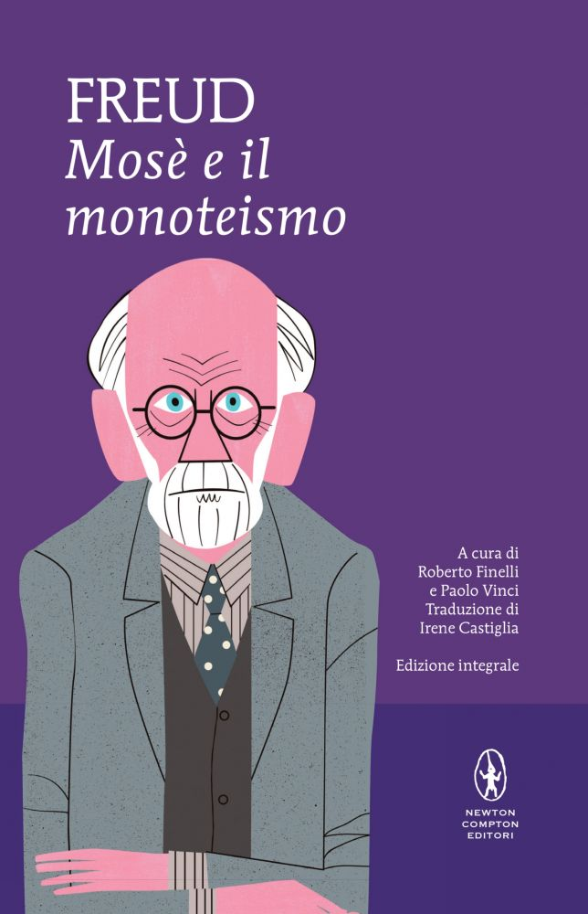
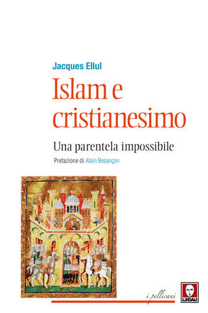
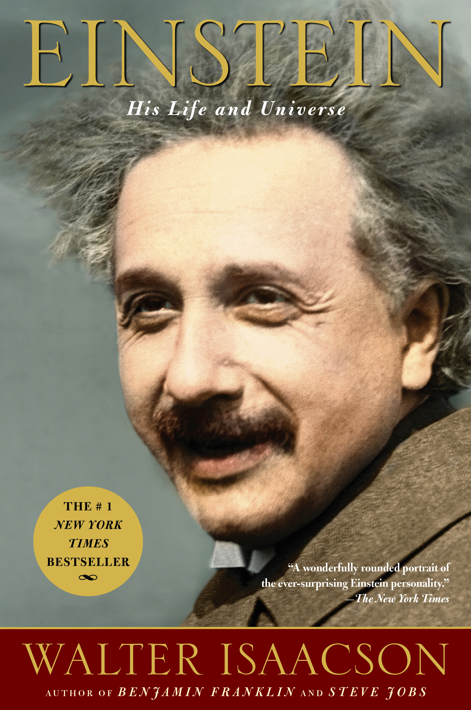
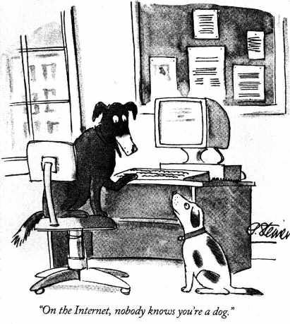

1:01:32 · 13 OPERE
Darsi ragione della realtà.
Il filo del discorso
Dr Divago interpreta la crisi contemporanea attraverso il rapporto fra soggetto, lettura e capacità di verificare le proprie convinzioni. Il richiamo alla Società del contrario e ai Cosiddetti sani di Fromm introduce una critica dell’adattamento e dell’autoinganno. Un romanzo probabilmente identificabile con Freud’s Megalomania offre il caso di un manoscritto immaginario, che il relatore confronta con Mosè e il monoteismo.
Leggi la sintesi completaRiduci la sintesi
L’esempio di una penna e la discussione del gusto in Kant portano poi alla differenza fra preferenza e giudizio motivato. La seconda parte affronta polemiche su informazione, controinformazione e Medio Oriente attraverso scritti di Jacques Ellul e libri di Bat Ye’or. La scheda distingue la raccolta Lindau, la prefazione a The Dhimmi e il diverso libro The Decline of Eastern Christianity, senza assegnare forzatamente ogni lettura a un solo testo. Corano e Vangeli vengono confrontati secondo una prospettiva teologica del relatore, mentre un volume di Eduard Meyer introduce il tema mormone. La critica alla biografia di Einstein di Isaacson torna al problema delle fonti e del confronto fra ricostruzioni. La vignetta di Steiner sull’identità in internet, Eurabia, la misura e il bootstrap diventano ulteriori immagini dell’autonomia del pensiero. La conclusione richiama il secondo comma dell’articolo 1 della Costituzione. Le accuse personali, le percentuali prive di metodo e le generalizzazioni religiose restano attribuite, distinguendo l’invito alla verifica dai punti che il contributo non dimostra.
I libri nel discorso

La società del contrario
Note sul riferimento
Copertina: Zambon · 2005
Copertina autentica dell’edizione di riferimento, controllata visivamente. Non identifica l’esemplare letto o citato nel video.
Titolo del proprio libro esplicito, con anno 2005 ricordato oralmente.

I cosiddetti sani
Note sul riferimento
Copertina: Mondadori, 1997 · Oscar saggi
Erich Fromm, I cosiddetti sani e sottotitolo La patologia della normalità espliciti.

Freud’s Megalomania. A Novel
Identificazione probabile
Note sul riferimento
Copertina del romanzo Norton: Copertina dell’edizione Norton paperback del 4 marzo 2003, 178 pagine, ISBN 9780393321999. Il relatore ricorda l’opera come pubblicata nel 2000; l’esemplare utilizzato non è identificato.
Copertina originale Norton con indicazione A Novel, nome Israel Rosenfield e occhiali. Il manoscritto attribuito a Freud fa parte dell’invenzione romanzesca: non è un documento autentico né una ritrattazione storica del fondatore della psicoanalisi.
Romanzo sulla megalomania di Freud, manoscritto fittizio e autoinganno corrispondenti alla descrizione Norton; autore e titolo inglese non pronunciati.

Mosè e il monoteismo
Note sul riferimento
Copertina della edizione Newton Compton di riferimento: Edizione integrale Newton Compton, MiniMammut 220, 160 pagine, ISBN 9788822703682, a cura di Roberto Finelli e Paolo Vinci, traduzione di Irene Castiglia.
Copertina autentica attualmente fornita dall’editore per questo ISBN, viola con ritratto stilizzato di Freud. Il catalogo offre più formati e ristampe: non si attribuisce questa grafica a un anno o all’esemplare del filmato senza ulteriore riscontro.
Titolo e incipit di Mosè e il monoteismo espliciti nel confronto col romanzo.

Critica del giudizio
Identificazione probabile
Note sul riferimento
Copertina: Bompiani, 2015
Kant e giudizio di gusto espliciti; collegamento probabile alla Critica del giudizio, titolo non pronunciato.

Islam e cristianesimo. Una parentela impossibile
Identificazione probabile
Note sul riferimento
Copertina della raccolta Lindau: Lindau, 12 ottobre 2017, I Pellicani, 128 pagine, ISBN 9788867088027, traduzione di Gianluca Perrini; prefazione editoriale di Alain Besançon.
Copertina autentica Lindau della raccolta, non di una prefazione autonoma. Il contenuto dichiarato include I tre pilastri del conformismo e la prefazione di Ellul a The Dhimmi. La diversa prefazione a The Decline non è automaticamente inclusa o confusa con questa. Besançon è autore della prefazione editoriale al volume, non degli scritti di Ellul.
Ellul, edizione Lindau, scritti sull’Islam e prefazione a Bat Ye’or: raccolta probabile dal catalogo; titolo italiano non pronunciato.

The Decline of Eastern Christianity under Islam: From Jihad to Dhimmitude
Note sul riferimento
Copertina della edizione inglese di riferimento: Fairleigh Dickinson University Press, edizione inglese del 1 settembre 1996, 522 pagine, ISBN 9781611471366, traduzione di Miriam Kochan e David G. Littman; prefazione di Jacques Ellul.
Copertina autentica della stessa opera dal servizio editoriale Bloomsbury, con titolo Eastern Christianity, Bat Ye’or e indicazione della prefazione di Ellul. Non è la copertina di The Dhimmi o del volume Lindau; l’esemplare del filmato non è identificato. Le tesi storiografiche restano attribuite all’autrice.
Bat Ye’or e titolo The Decline of Eastern Christianity under Islam riconoscibili; Eastern normalizzato come orientale, non occidentale.

Corano
Note sul riferimento
Copertina: BUR Classici, edizione aggiornata
Edizione con introduzione, traduzione e commento di Alessandro Bausani, a cura di Layla Mustapha Ammar. Anno della ristampa non dedotto dalla copertina; nessuna edizione attribuita al video.
Corano esplicito nel confronto degli episodi di Gesù; sura e versetti non pronunciati.

Ursprung und Geschichte der Mormonen. Mit Exkursen über die Anfänge des Islâms und des Christentums
Note sul riferimento
Frontespizio della edizione 1912: Eduard Meyer, Halle a. S., Verlag von Max Niemeyer, 1912, con cinque illustrazioni. Immagine del frontespizio della digitalizzazione storica, pagina PDF 7.
Frontespizio, pagina 7 della copia digitale. Titolo, autore, editore e anno leggibili. Non è una copertina esterna e non è stato ricostruito; il volume fisico del relatore non è identificato. L’immagine del frontespizio è dichiarata anche nell’etichetta pubblica.
Titolo tedesco Ursprung und Geschichte der Mormonen riconoscibile; attribuzione a Meyer riscontrata dal frontespizio, nome non pronunciato.

Einstein: His Life and Universe
Note sul riferimento
Copertina: Simon & Schuster, trade paperback, 13 maggio 2008, 704 pagine. Immagine corrente distribuita dall’editore per l’ISBN 9780743264747.
Copertina autentica con ritratto di Einstein, titolo dorato, sottotitolo bianco e fascia rossa con Walter Isaacson. L’immagine corrente richiama anche Steve Jobs fra le opere dell’autore: non si assume che ogni elemento grafico appartenesse alla prima tiratura del 2008. Non è identificata una precisa lingua o edizione nel filmato.
Walter Isaacson e la sua biografia di Einstein espliciti, critica non documentata con pagina.

On the Internet, nobody knows you’re a dog
Identificazione probabile
Note sul riferimento
Vignetta di Peter Steiner, The New Yorker, 5 luglio 1993: Vignetta di Peter Steiner pubblicata nel New Yorker, 5 luglio 1993, p. 61, volume 69, numero 20. Riproduzione accademica del disegno con la firma e la didascalia originali, conservata sul sito MIT. Non è una copertina del periodico.
Immagine intera verificata: cane alla tastiera, secondo cane a terra, firma e didascalia. Credito Peter Steiner / The New Yorker; riproduzione accademica MIT. Il logo della testata e l’icona del telefono della pagina sono stati respinti e non sono esportati. La riformulazione orale del dialogo non è una trascrizione letterale della vignetta.
Vignetta del cane al computer e didascalia riconoscibili; l’autore è riscontrato nelle fonti bibliografiche.

Eurabia. Come l’Europa è diventata anticristiana, antioccidentale, antiamericana, antisemita
Note sul riferimento
Copertina: Lindau, I Draghi,2024,432 pagine, terza edizione italiana; traduzione del testo di Lucilla Congiu e della nuova prefazione di Antonia Federici. Copertina della edizione 2024, non attribuita al video. Il sottotitolo esprime la tesi dell’autrice, non un fatto adottato dalla scheda.
Immagine autentica dell’opera, controllata visivamente; l’edizione di riferimento non è attribuita al filmato.
Bat Ye’or, Eurabia e anno 2005 espliciti.

Costituzione della Repubblica Italiana
Note sul riferimento
Copertina dell’edizione Intra aggiornata al 2023: Intra · 2023 · introduzione di Umberto Vincenti
Copertina autentica del testo integrale, aggiornata alla legge costituzionale 26 settembre 2023 n.1. È successiva al filmato del 2019 e non rappresenta la versione storica letta dal relatore. Umberto Vincenti firma l’introduzione.
Costituzione italiana esplicita e richiamo al secondo comma dell’articolo 1.